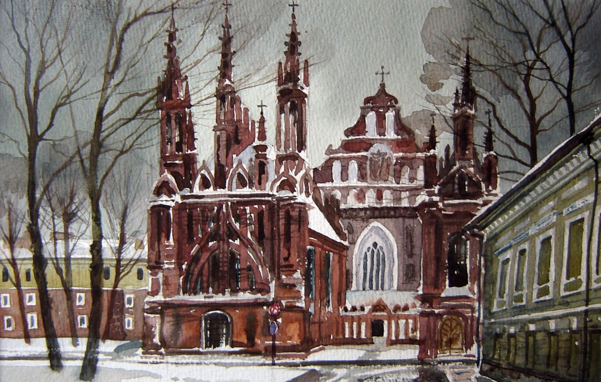

Tapyba | Eglės galerija
 Skip to content0 prekės - € 0.00 LT EN In Progress Paveikslai Tapyba Aurimas Eidukaitis Virgis Ruseckas Elena Kniūkštaitė Vladimiras Bogatyriovas Bronius Rutkauskas Dalia Skridailaitė Elena Griščenko Natalija Levkovska Vigintas Stankus Živilė Jasutytė Vincas Norkus Tomas Mickonis Gintaras Palemonas Janonis Akvarelė Vladimiras Bogatyriovas Osvaldas Jablonskis Grafika Neringa Marcinkevičiūtė-Strazdė Edita Suchockytė Daiva Staškevičienė Danutė Žalnieriūtė Gražvyda Andrijauskaitė Egidijus Rudinskas Koliažai Renata Kasiulytė Pastelė Andrius Butvilas Kazys Šimonis Keramika Aušra Deltuvienė Domilė Ragauskaitė Giedrė Bardzilauskė Nora Blaževičiūtė Laima Mačiulaitytė Juvelyrika Žiedai Auskarai Pakabukai Segės Apyrankės Drabužiai Suknelės Palaidinės Sarafanai Megztiniai Švarkai Striukės Paltai Kelnės Aksesuarai Apyrankės Pakabukai Auskarai Žiedai Segės Rankinės Skarelės Kita Atvirukai Skulptūra Saulius Lampickas Parodos Rėminimas Kontaktai Search In Progress Paveikslai Tapyba Aurimas Eidukaitis Virgis Ruseckas Elena Kniūkštaitė Vladimiras Bogatyriovas Bronius Rutkauskas Dalia Skridailaitė Elena Griščenko Natalija Levkovska Vigintas Stankus Živilė Jasutytė Vincas Norkus Tomas Mickonis Gintaras Palemonas Janonis Akvarelė Vladimiras Bogatyriovas Osvaldas Jablonskis Grafika Neringa Marcinkevičiūtė-Strazdė Edita Suchockytė Daiva Staškevičienė Danutė Žalnieriūtė Gražvyda Andrijauskaitė Egidijus Rudinskas Koliažai Renata Kasiulytė Pastelė Andrius Butvilas Kazys Šimonis Keramika Aušra Deltuvienė Domilė Ragauskaitė Giedrė Bardzilauskė Nora Blaževičiūtė Laima Mačiulaitytė Juvelyrika Žiedai Auskarai Pakabukai Segės Apyrankės Drabužiai Suknelės Palaidinės Sarafanai Megztiniai Švarkai Striukės Paltai Kelnės Aksesuarai Apyrankės Pakabukai Auskarai Žiedai Segės Rankinės Skarelės Kita Atvirukai Skulptūra Saulius Lampickas Parodos Rėminimas Kontaktai Search Home Paveikslai Tapyba
Tapyba
Rodoma 1–16 iš 325
Aurimas Eidukaitis (62)
Virgis Ruseckas (139)
Elena Kniūkštaitė (63)
Vladimiras Bogatyriovas (18)
Bronius Rutkauskas (7)
Dalia Skridailaitė (6)
Elena Griščenko (19)
Natalija Levkovska (4)
Vigintas Stankus (1)
Živilė Jasutytė (2)
Vincas Norkus (2)
Tomas Mickonis (1)
Gintaras Palemonas Janonis (1)
Į krepšelįBonso metamorfozė
€ 990.00 Į krepšelįGyva muzika
€ 850.00 Į krepšelįLangas į rojų
€ 990.00 Į krepšelįRyšys su gamta
€ 850.00 Į krepšelįAngelai renkantys obuolius
€ 3,300.00 Į krepšelįAngelai valgo vyšnias
€ 3,500.00 Į krepšelįElnias
€ 4,800.00 Į krepšelįAngeliukas po obelim
€ 2,500.00 Į krepšelįAngeliukas tarp žolynų
€ 2,500.00 Į krepšelįDailininkė su dūdele
€ 5,300.00 Į krepšelįDiptikas. Pro drebulyną
€ 4,300.00 Į krepšelįAngeliukai tarp šeivamedžių. Mėnesiena
€ 2,500.00 Į krepšelįGeltona lelija
€ 450.00 Į krepšelįGeltonas dangus
€ 2,500.00 Į krepšelįGluosnis ir gervė
€ 2,700.00 Į krepšelįKaštonai
€ 3,700.00 1 2 3 4 … 19 20 21Informacija
Apie mus Pirkimo taisyklėsSekite mus
Facebook Instagram © 2020 Eglės galerija Sprendimas: Elektroninės informacijos centrasThis website uses cookies to provide you with the best browsing experience.
Find out more or adjust your settings .
Accept Privacy Overview Strictly Necessary Cookies Powered by GDPR plugin Privacy OverviewThis website uses cookies so that we can provide you with the best user experience possible. Cookie information is stored in your browser and performs functions such as recognising you when you return to our website and helping our team to understand which sections of the website you find most interesting and useful.
Strictly Necessary CookiesStrictly Necessary Cookie should be enabled at all times so that we can save your preferences for cookie settings.
If you disable this cookie, we will not be able to save your preferences. This means that every time you visit this website you will need to enable or disable cookies again.
Enable All Save Settings